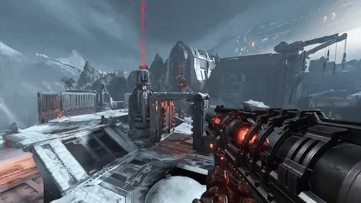

unlocked during E1M3 mission.
Has massive damage and great splash damage not only great for killing heavy demons.

Lock-on Burst: locks on demons and firing three rocket at once
one of the highest DPS in game bassicaly at any distance
perfect for taking down heavy and superheavy demons
Mastery: Dual Lock: A second lock-on target can now be acquired before firing rocket bursts.
Remote Detonate: Rocket can be remotely detonated any time berofe it hits a target
Great for taking down many weaker deamons cause of splash damage
Mastery: Explosive array: If a rocket is detonated while the Proximity Flare is active, additional explosives will activate to create a larger area of effect.

Forged from the metal smelting pits of the Golgothan enclave, the Paingiver is a weapon of pure malice devised for a singular purpose - to enact sufferingupon the weak.
A tool of insidious intent, it was not by mortal design that the Paingiver was conceived. The Cultist engineers of Golgotha, as acolytes of the unholy and
all powerful will of the Hell Priest Ranak, were bestowed its vision, scribes to Ranak's dark premonition. With great clarity did the Paingiver reveal itself to the shared consciousness
of the Golgothan acolytes, and with ferver and religious zealotry did they set themselves towards its manifestation, toiling without rest until the Paingiver was created.